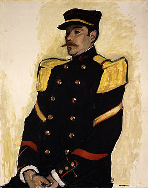

Albert Marquet (27 March 1875 – 14 June 1947) was a French painter, associated with the Fauvist movement. He initially became one of the Fauve painters and a lifelong friend of Henri Matisse. Marquet subsequently painted in a more naturalistic style, primarily landscapes, but also several portraits and, between 1910 and 1914, several female nude paintings.